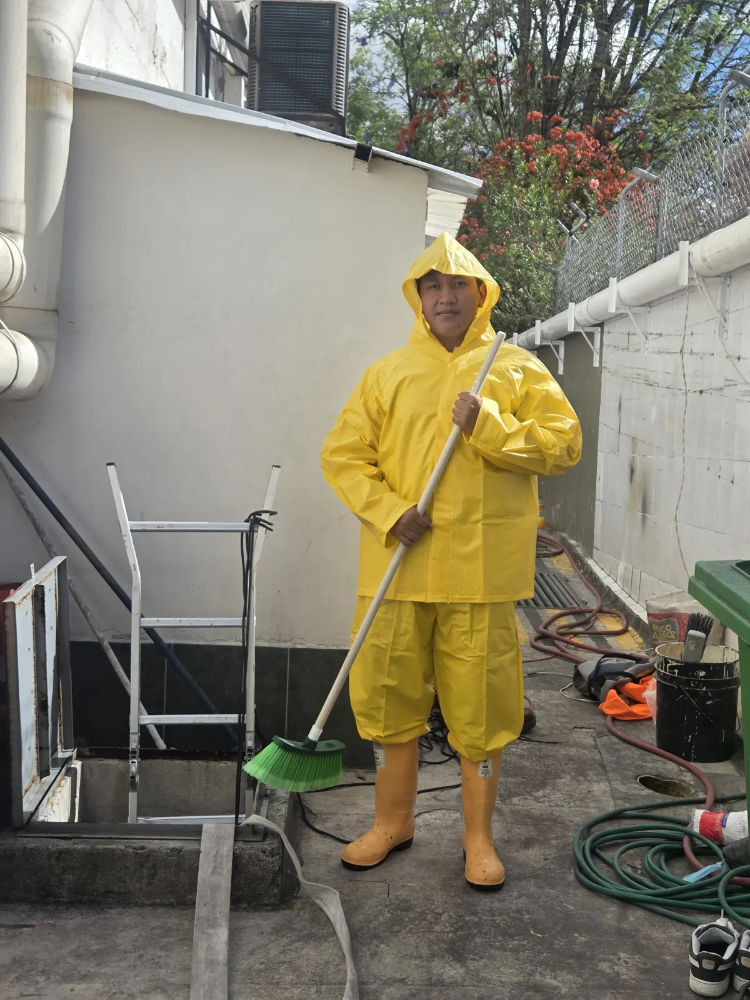

Evacuación del agua
Sacamos el agua sucia y el agua de lavado con bombas sumergibles propias, sin depender del sistema del edificio.
Servicio técnico en Quito
Limpiamos y desinfectamos la cisterna con nuestro propio personal técnico. Somos electromecánicos: el mismo equipo que mantiene cuartos de bombas, así que el sistema queda funcionando cuando nos vamos.
El precio depende del tamaño y del estado de la cisterna. La visita para verla es sin costo.

Todo el trabajo lo hace personal propio de ISI&ER. No subcontratamos la limpieza.
Sacamos el agua sucia y el agua de lavado con bombas sumergibles propias, sin depender del sistema del edificio.
Se retiran lodos y sedimentos del fondo y se lavan paredes, piso y tapa con los químicos adecuados para depósitos de agua.
Desinfectamos el depósito y lo dejamos con pastillas de cloro, listo para volver a llenarse.
Flotador, sensores de nivel y válvula de pie: se revisan y se dejan probados antes de entregar.
Hacemos las maniobras del hidroneumático para que, al retomar el control, el sistema arranque sin problemas.
Se entrega un informe con respaldos fotográficos de lo encontrado y lo ejecutado.
Dentro de una cisterna no solo hay agua: hay flotador, sensores de nivel y la válvula de pie de la que dependen las bombas del edificio.
Es lo que espera cualquiera que contrata una limpieza, y es el punto de partida, no el final del trabajo.
Al terminar, el flotador, los sensores y la válvula de pie quedan probados, y el hidroneumático vuelve a operar con nosotros presentes.
Si algo del cuarto de bombas necesita atención, lo ve el mismo equipo que ya está en sitio, y queda registrado en el informe.
Es la primera pregunta de todo administrador, y esta es la respuesta concreta.
Cuando la cisterna pierde agua o el hormigón está deteriorado, la limpieza sola no resuelve.
También impermeabilizamos cisternas. Si durante la visita o la limpieza encontramos filtraciones, fisuras o recubrimiento en mal estado, se lo indicamos en el informe y le cotizamos la impermeabilización por separado, para que usted decida si la ejecuta ahora o la programa.
Fotografías de trabajos propios. Más trabajos en la galería.


La cisterna no es un trabajo de una sola vez: se vuelve a ensuciar. Ofrecemos un plan de mantenimiento programado que combina la limpieza periódica del depósito con la revisión del cuarto de bombas, con beneficios para quien lo contrata. Así el edificio deja de reaccionar a emergencias y usted tiene el respaldo documentado de cada intervención.
La cisterna guarda el agua; las bombas la mueven y le dan presión. Son dos trabajos distintos y conviene no confundirlos.
Limpieza, desinfección e impermeabilización del depósito, con revisión de los componentes que están dentro.
Si el problema es el abastecimiento, la presión o el equipo de bombeo, ese es el servicio de bombas de agua e hidroneumáticos, donde está el diagnóstico y la reparación.
Normalmente no. Solo se cierra el ingreso hacia la cisterna. El corte total ocurre únicamente cuando toda la alimentación del sitio pasa por la cisterna, sin tubería directa; en ese caso se lo advertimos al coordinar la fecha.
Alrededor de 3 horas. Depende del tamaño de la cisterna y de cuánto sedimento tenga acumulado.
Depende del tamaño y del estado de la cisterna, y eso hay que verlo. La visita para revisarla es sin costo y sin compromiso; de ahí sale el precio.
Nosotros, con bombas sumergibles propias. No usamos el equipo del edificio para vaciar el depósito.
Los químicos adecuados para depósitos de agua, y se deja la cisterna con pastillas de cloro.
Sí. Se entrega un informe con respaldos fotográficos de lo encontrado y lo ejecutado, que sirve para sustentar el gasto ante la directiva o la asamblea.
Se indica en el informe y se cotiza la impermeabilización por separado. También la hacemos nosotros.
Depende del uso, del número de departamentos, de la calidad del agua y del estado del depósito. En la visita le proponemos una periodicidad acorde y, si le interesa, el plan programado.
Atendemos Quito urbano, el Valle de Los Chillos, Cumbayá, Tumbaco y sectores cercanos del Distrito Metropolitano. Fuera de esa zona, consúltenos y le confirmamos.
El agua de un edificio depende del depósito, del bombeo y del tablero que los controla.
Antes de aprobar un gasto ante una directiva o una asamblea conviene saber a quién se contrata. Estos son nuestros respaldos.
Atendemos exclusivamente en las instalaciones del cliente: vamos al edificio, al conjunto o al local. Es nuestro modelo de trabajo.
Cuéntenos el tamaño aproximado, cómo es el acceso y cuándo fue la última limpieza. Con eso coordinamos la visita sin costo.